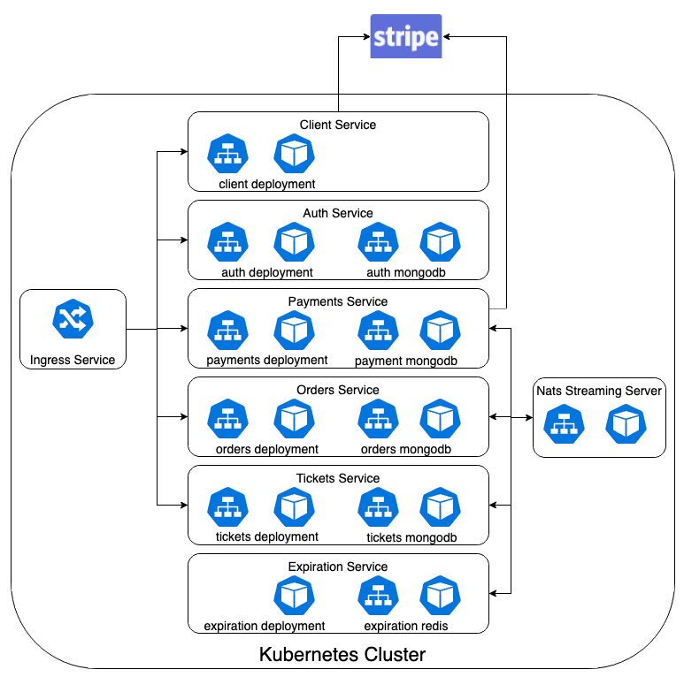

Created by Peter Gross, last modified on Sep 15, 2020
I decided to follow the courses approach and test each of the services individually
Testing all RESP API's
Testing the send and receiving of events
Testing the service standalone mocking/stubbing the external services
In a future phase I will try and automate the testing of the whole application

With Jest I was able to:
Automate the testing of the individual component
Allow CICD pipelines to invoke the testing when creating a pull request
Fake the MongoDB using the inMemory Mongodb and cookie creation
Mock the Stripe service and Messaging service
The key area of concern is how to do the end to end testing with consistent data.
The approach i have taken with the services having their own databases, means they have to be insync or the tests will fail.
Some early experiments involved creating the data via test scripts to simulate the entry of data, but i have concerns as to how this scales in a large system. This is an area for me to research.
{kind=link}
{kind=link}
{kind=link}